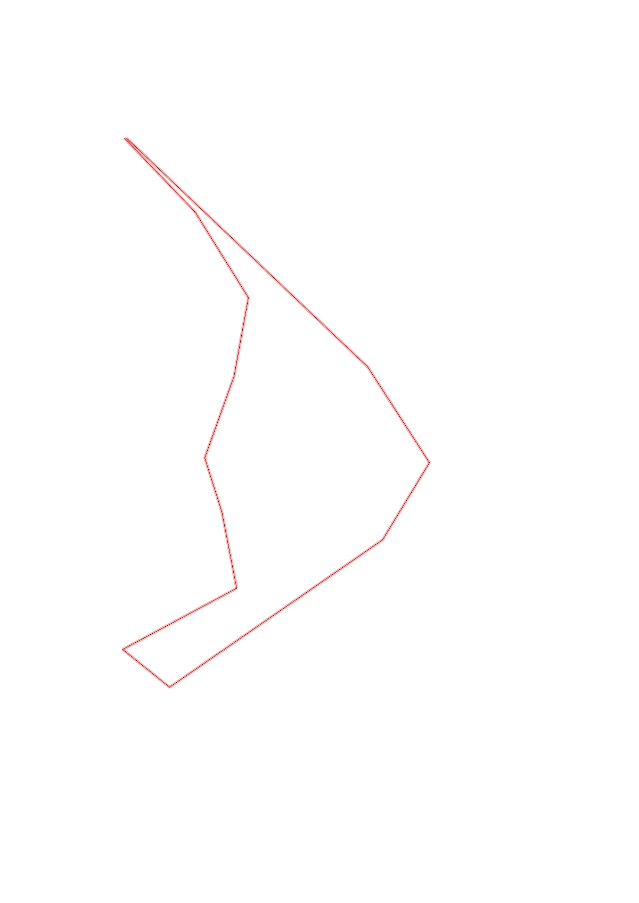
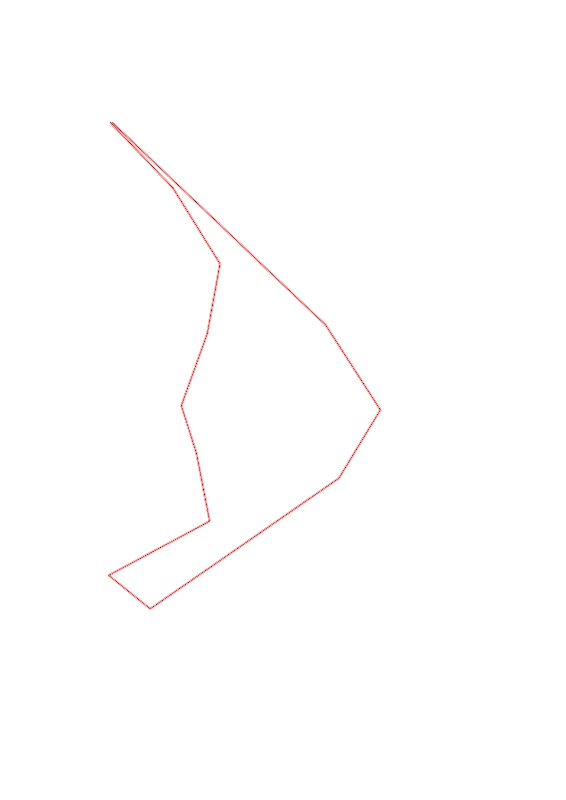

| Control |
Points |
Time Punched |
Distance |
Your Time |
Pace |
Place |
Fastest Time |
Median Time |
% Behind Fastest |
| 42 |
40 |
|
0.48 |
0:02:15 |
04:41 |
3 / 7 |
0:02:11 |
0:02:17 |
3% |
| 43 |
40 |
|
0.47 |
0:03:56 |
08:22 |
1 / 1 |
0:03:56 |
0:03:56 |
0% |
| 75 |
70 |
|
0.38 |
0:04:41 |
12:19 |
6 / 6 |
0:01:45 |
0:03:10 |
167% |
| 31 |
30 |
|
0.41 |
0:03:10 |
07:43 |
1 / 1 |
0:03:10 |
0:03:10 |
0% |
| 92 |
90 |
|
0.26 |
0:01:39 |
06:20 |
1 / 1 |
0:01:39 |
0:01:39 |
0% |
| 94 |
90 |
|
0.37 |
0:03:35 |
09:41 |
1 / 1 |
0:03:35 |
0:03:35 |
0% |
| 67 |
60 |
|
0.61 |
0:05:55 |
09:41 |
1 / 1 |
0:05:55 |
0:05:55 |
0% |
| 74 |
70 |
|
0.28 |
0:02:03 |
07:19 |
2 / 2 |
0:01:44 |
0:01:53 |
18% |
| 82 |
80 |
|
1.22 |
0:09:29 |
07:46 |
1 / 1 |
0:09:29 |
0:09:29 |
0% |
| 85 |
80 |
|
0.42 |
0:04:48 |
11:25 |
1 / 1 |
0:04:48 |
0:04:48 |
0% |
| 104 |
100 |
|
0.54 |
0:04:02 |
07:28 |
1 / 3 |
0:04:02 |
0:04:29 |
0% |
| Finish |
0 |
|
1.56 |
0:12:41 |
08:07 |
2 / 2 |
0:10:29 |
0:11:35 |
20% |
Total Distance Covered: 7.0km
Points Scored: 750
Late Penalty: 0
Final Score: 750
Total Time: 0hours 58minutes 14seconds
Efficiency: 107.14 points/km
 
